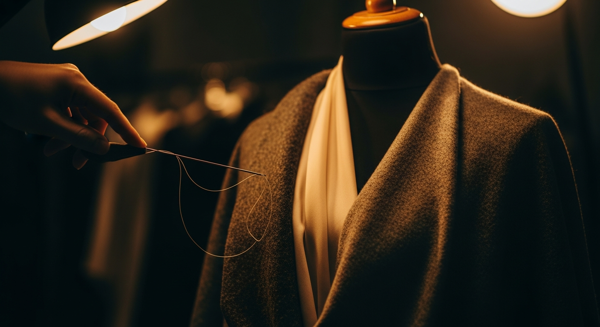

Индивидуальный пошив
Индивидуальный пошив вечерних платьев
Вечернее платье создаётся для особого дня: выпускного, свадьбы, торжества или важного события. Ателье 15/13 разрабатывает силуэт, посадку и детали под фигуру, материал и настроение события.
Рассчитайте предварительную стоимость пошива на сайте и приходите на консультацию с готовым ориентиром.
Галерея
Кейсы, посадка и детали пошива
Блок подготовлен под будущие фотографии изделий, крупные планы ткани и примеры посадки.
Почему ателье
Платье под событие, фигуру и материал
Посадка
Платье строится под вашу фигуру и сценарий события, чтобы силуэт выглядел собранно в движении и на фото.
Качество
Конструкция, ткань, подкладка и отделка подбираются под задачу: от лаконичного вечернего платья до сложного торжественного образа.
Уровень luxury brand
Фокус на чистой линии, материале и деталях, которые делают платье индивидуальным, но не перегруженным.
Стоимость
Пошив от 80 000 ₽
Стоимость пошива вечернего платья — от 80 000 ₽. Итоговая цена зависит от ткани, конструкции, декора, подкладки, сроков и количества примерок.
Что влияет на цену
Сложность силуэта
Корсетная основа, драпировки, шлейф, разрезы и асимметрия влияют на объём работы.
Ткань и подкладка
Шёлк, атлас, бархат, кружево, органза и сложные материалы требуют разной обработки.
Декор и ручная работа
Вышивка, пайетки, кружево, аппликации и ручные элементы рассчитываются отдельно.
Сроки и примерки
Итоговая стоимость зависит от срочности, количества примерок и уровня детализации.
Процесс
От идеи до готового изделия
-
Консультация: обсуждаем событие, силуэт, референсы и желаемый образ
-
Мерки и материалы: подбираем ткань, подкладку, фурнитуру и детали
-
Конструирование: создаём основу изделия под фигуру и сценарий носки
-
Пошив и примерки: уточняем посадку, длину, линию талии и детали
-
Финальная готовность: проверяем посадку, обработку и комфорт перед событием
Материалы
Ткани и сезонность
Материалы подбираются под событие, сезон, силуэт и желаемую пластику изделия.
FAQ
Частые вопросы
Можно ли сшить вечернее платье на выпускной?
Да, вечернее платье можно создать специально для выпускного: с нужной длиной, силуэтом, тканью и деталями под формат события.
Можно ли сделать платье для свадьбы?
Да, ателье может сшить платье для свадьбы, свадебного ужина, второго образа или торжественной части мероприятия.
Сколько стоит пошив вечернего платья?
Стоимость пошива вечернего платья начинается от 80 000 ₽. Точная цена зависит от ткани, конструкции, декора и сроков.
Можно ли сшить платье по фото или референсу?
Да, фото или референс можно использовать как основу для силуэта, настроения, деталей и пропорций будущего изделия.